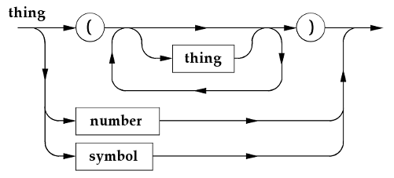

Programming Project 2
CSCI 2041 Advanced Programming Principles
Fall 2021
0. Introduction.
In this programming project, you will write an OCaml module whose functions parse Lisp thing’s from a file, and return the internal representations of those thing’s. It will use the token scanner from Lab 9, in a module called Scanner. If we have a function that reads Lisp thing’s, a function that evaluates Lisp thing’s, and a function that prints Lisp thing’s, then we could put them all together to make a complete Lisp system. Writing the evaluator will be the subject of the next few lectures.
1. Theory.
In formal language theory, a language is a set of strings; a string is a sequence of tokens. A grammar is a mathematical description of a language that tells which strings are in the set, and which strings are not. One way to specify a grammar is to use mathematical rules, but we won’t do that here. Instead, we’ll use a directed graph called a syntax diagram. A syntax diagram for Lisp thing’s is shown below.

Every syntax diagram has a name: the name of this diagram is
thing. It has exactly one arrow that lets you enter the diagram
on the left, and exactly one arrow that lets you exit the diagram on the
right. By following arrows from left to right, going all the way through the
diagram, you can tell what sequences of tokens can be
thing’s.
The box labeled thing stands for
a Lisp thing. The diagram is recursive, because it is defined in
terms of itself: there is a box labeled thing inside the diagram
labeled thing. The box labeled number is a Lisp
number token (from Lab 9). It’s a sequence of one or more digits,
‘0’ through ‘9’,
preceded by an optional minus sign ‘−’. The box labeled
symbol is a Lisp symbol token (also from Lab 9). It’s a
sequence of one or more characters other than blanks, newlines, and
parentheses. There is no box labeled nil, because it’s
simpler to pretend that nil is a symbol, even
though it really isn’t (see below).
Here are some examples of
thing’s that are described by the diagram. A number, like
100, is a thing, because we can start on the left,
follow arrows to the box labeled number, and then follow arrows
out of the diagram again.
A symbol, like hello, is also a
thing, because we can start on the left, follow arrows to the
box labeled symbol, and then follow arrows out of the diagram.
An empty list, like (), is a
thing, because we can follow an arrow to the circle labeled
‘(’, follow an arrow to the circle labeled
‘)’, and then follow an arrow out of the diagram. In
Lisp, () is just another notation for nil (see
below).
A list, like (a b c),
is a thing, because we can follow an arrow to the circle labeled
‘(’, and then to the box labeled thing.
We imagine that a copy of the diagram thing appears in place of
that box. If we follow arrows through that copy, then we find that
a is also a thing. If we go around the loop, back
to the box labeled thing, we find in the same way that
b is another thing, and if we go around the loop
again, we find that c is a thing as well. When we
exit the loop, we follow an arrow through a circle labeled
‘)’, and then follow yet another arrow out of the
diagram.
We could show that nested lists like
((a) b c) and (a (b c)) are
thing’s too, by following arrows through the diagram in
the same way. And we could show that something like
‘)x(()5(’ is not a thing, because
there is no way to follow arrows through the diagram given its tokens.
2. Implementation.
For this project, you must write an OCaml module called Parser, whose type is the OCaml signature Parsers. (A parser is a procedure that reads a series of tokens and constructs a representation of what the tokens stand for.) The module Parser will use functions defined in the module Scanner from Lab 9. Although Parser may contain many functions, only two OCaml objects must be visible outside it: the exception Can'tParse, and the function makeParser, both of which are described below.
Parsers
(5 points.) Signature. This signature must describe the function makeParser and the exception Can'tParse, but nothing else.
Can'tParse message
(5 points.) Exception, where message is a string. This must be raised by the functions described below if they can’t parse a thing.
Parser
(10 points.) Module, with the type Parsers (see above). It must contain definitions for the exception Can'tParse, along with the functions makeParser, nextThing, and nextThings. It may also contain definitions of other objects, but only makeParser and Can'tParse must be visible outside Parser.
makeParser path
(10 points.) Return a parser: a new function that takes the OCaml unit object () as its only argument. (Do not confuse the OCaml unit object () with the Lisp list ()!) Each time it is called, the parser reads the next Lisp thing from the file whose pathname is the string path, and returns that thing.
The function makeParser must make a scanner (like the one from Lab 9) by calling Scanner.makeScanner. It must also make a variable called token. The scanner reads tokens from the file whose pathname is path. The variable token holds the token most recently read by the scanner. The scanner and the variable must be visible to the parser returned by makeParser, but invisible to all other functions.nextThing ()
(10 points.) This function does all the work for the parser returned by makeParser. It examines token and uses it to decide what kind of thing it will read. Then it reads the thing, constructs an OCaml object which represents that thing, and returns the object. It does this in the following way.
If token is CloseParenToken
then
raise Can'tParse.
If token is EndToken
then
raise Can'tParse.
If token is NumberToken n
then
return Number n.
If token is OpenParenToken
then
read a Lisp list and return it.
If token is SymbolToken "nil"
then
return Nil (see below).
If token is SymbolToken s
then
return Symbol s.
Note that nil will be read by the token scanner as a SymbolToken. However, it must be treated as if it is the thing Nil.
nextThings ()
(10 points.) This is a helper that nextThing uses to parse a Lisp list. When it is called, token is the first token after the OpenParenToken that begins the list. The function nextThings reads a series of zero or more thing’s from the file whose pathname is path. It stops reading when it encounters a CloseParenToken or an EndFileToken. If nextThings reads zero things, then it must return Nil. If it reads one or more thing’s t₁, t₂ ..., tₙ, then it must return a Lisp list of those thing’s, like this.
Cons (t1, Cons (t2 ..., Cons (tn, Nil) ... ))
If nextThings encounters a CloseParenToken, then it must skip that token. If it encounters an EndToken, then it must raise Can'tParse, because this means the Lisp list ended without a CloseParenToken.
Here are some hints about how to write these functions. The scanner and the parser are designed according to similar rules, as follows.
The scanner read characters. The parser reads tokens.
The scanner used a variable ch to hold the most recently read character from a file. The parser uses a variable token to hold the most recently read token from a file.
The scanner was able to tell what kind of token it was about to read by examining the first character of that token (in ch). The parser is able to tell what kind of thing it is about to read by examining the first token of that thing (in token).
Whenever a function in the scanner was called, ch always held the first character of the token to be read. Whenever a function in the parser is called, token always holds the first token of the thing to be read.
Whenever a function in the scanner returned, ch always held the next character after the token that was just read. Whenever a function in the parser returns, token always holds the next token after the thing that was just read.
To make some of these rules work, it is necessary to skip tokens after they are read. If nextToken is the name of the scanner created by makeScanner, then we can skip a token by writing token := nextToken (). For example, after nextThing reads a SymbolToken, it must skip that token in this way.
3. Examples.
The file
things.txt
on Canvas contains a series of example Lisp expressions. They are the same
ones that were used to test the printing function from Lab 10. The file
testsP2.ml
on Canvas contains a series of calls to a parser created by
makeParser. Each call reads the next Lisp expression from
things.txt, converts it to an OCaml object, and prints that
object.
You can use things.txt and
testsP2.ml to test whether your parser works. However, unlike
the tests that come with lab assignments, the tests in
testsP2.ml are not worth points! The TA’s will grade
this project by reading your code, not by counting how many tests succeed
and fail.
4. Deliverables.
Unlike the lab assignments, YOU ARE NOT ALLOWED TO WORK WITH A
PARTNER ON THIS PROJECT. Although you may discuss the project
with others in a general way, IT MUST BE WRITTEN ENTIRELY BY
YOURSELF. The project is worth 50 points, and will be
due at 11:55 PM on December 8,
2021.
The file
parser.ml,
available on Canvas, contains definitions for the OCaml type
thing and the OCaml module Scanner, both from
previous labs. It also has space for you to put your code for
Parser, the module that you must write for this project. Write
your code in that space and submit a copy of parser.ml with
your code in it. If you do know know how or where to submit this file, then
please ask your lab TA. DOUBLE CHECK to make
sure you have submitted the correct file, both BEFORE AND
AFTER you turn it in.